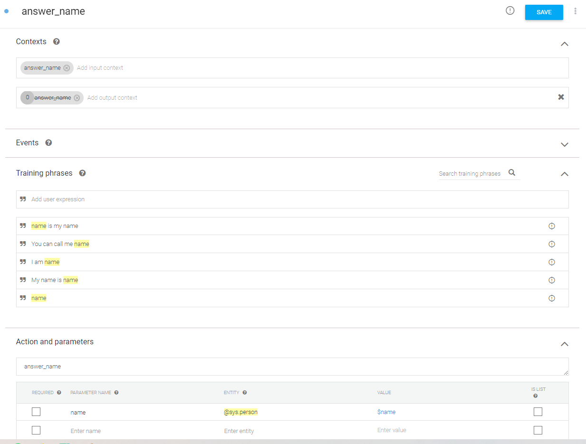

3: Using the Dialogflow Service
This tutorial will guide you through the use of the Dialogflow service. First, we introduce Dialogflow and explain how it works. Then, we look at how to use Dialogflow with the Nao robot. Finally, we introduce a way to use Dialogflow to transcribe audio - this is platform-independent and can thus be used even if you don’t have access to a robot.
Introduction to Dialogflow
The dialogflow service enables the use of the Google Dialogflow platform within your application.
Dialogflow is used to translate human speech into intents (intent classification). In other words, not only does it (try to) convert an audio stream into readable text, it also classifies this text into an intent and extracts additional parameters called entities from the text, if specified. For example, an audio stream can be transcribed to the string “I am 15 years old”, and classified as the intent ‘answer_age’ with entity ‘age=15’.
In order to create a Dialogflow agent, visit https://dialogflow.cloud.google.com and log-in with a Google account of choice. Use the ‘Create Agent’ button in the top left to start your first project. For our framework to be able to communicate with this agent, the project ID and a keyfile are required. To get a keyfile read the instructions on Getting a google dialogflow key. Once you have a keyfile, place it inside the conf/google folder in your local repository.
In Dialogflow, the main items of interest are the Intents and the Entities. An intent is something you want to recognize from an end-user; here we will show you an example of an intent that is aimed at recognizing someone’s name.
{kind=link}

When creating an intent you can name it anything you like; In this example we go with ‘answer_name’ (seen at the very top). Below ‘Action and parameters’, you should give the name of the intent that will actually be used in your program. Here, we also set that to ‘answer_name’.
Moreover, it is useful to set a context for the intent. Contexts allow you to define specific states that a conversation must be in for an intent to match. You can also have intents activate contexts to help direct the conversation in future exchanges. Usually though, in a social robotics application, the context is already known. So in this example we match the name of the (input)context with the name of the intent, and thus make it ‘answer_name’ as well. By default, Dialogflow keeps the context active for 5 exchanges; but we can fix this by changing the 5 (at the start of the output context) to a 0.
Now we arrive at the most important aspect of the intent: the training phrases. Here, you can give the kinds of input strings you would expect; from these, Dialogflow learns the model it will eventually use. You can identify a part of the phrase as a parameter by double-clicking on the relevant word and selecting the appropriate entity from the list. It will then automatically appear below ‘Action and parameters’ as well; the ‘parameter name’ there will be passed in the result (we use ‘name’ here). The system has many built-in entities (like ‘sys.person’), but you can define your own entities as well (even through importing CSV files). Our complete intent example thus looks like this (note: using sys.given-name is usually preferred):
Using the Dialogflow component with Nao microphone
Note
Before running demo_nao_diaglogflow.py, make sure to start the SIC service by running run-dialogflow in another terminal. You may have to run pip install social-interaction-cloud[dialogflow] beforehand.
Let’s create a simple demo that prints the transcript and the intent detected by Dialogflow.
Start by importing the necessary SIC functions:
from sic_framework.devices import Nao
from sic_framework.devices.nao import NaoqiTextToSpeechRequest
from sic_framework.services.dialogflow.dialogflow import (DialogflowConf, GetIntentRequest, RecognitionResult, QueryResult, Dialogflow)
First, we create a connection to the Nao robot to be able to access its microphone. In order to use this intent we created earlier in an application, we need to set the keyfile and the sample rate. To do this, we create the Dialogflow configuration object. Make sure you read the documentation at the start of this page to obtain the key file for your Dialogflow project.
# connect to the robot
nao = Nao(ip='192.168.178.45')
# load the key json file
keyfile_json = json.load(open("../../conf/google/dialogflow-tutorial.json"))
# set up the config
conf = DialogflowConf(keyfile_json=keyfile_json, sample_rate_hertz=16000)
Having done this setup, we can initiate the Dialogflow object and connect the output of NaoqiMicrophone as the input of Dialogflow. The parameters ip='localhost and conf=conf pass the ip address of the device the DialogflowComponent is running on and our configuration to be able to authenticate to Dialogflow.
# initiate Dialogflow object
dialogflow = Dialogflow(ip='localhost', conf=conf)
# connect the output of NaoqiMicrophone as the input of DialogflowComponent
dialogflow.connect(nao.mic)
Finally, we need to register a callback function to act whenever Dialogflow output is available. Whenever Dialogflow detects a new word, we will receive a RecognitionResult message. Then, on_dialog function simply prints the detected speech when it’s considered final.
# register a callback function to act upon arrival of recognition_result
dialogflow.register_callback(on_dialog)
Now we can start actually getting intents from the user! We need to set a chat ID, with which Dialogflow identifies the conversation. This can be a random number (or the same one if you want to continue a conversation). Then, we request Dialogflow to get an intent. It will start sending the Nao’s microphone audio to Dialogflow. As you start talking, the SIC on_dialog function should print the transcript in the terminal.
x = np.random.randint(10000)
for i in range(25):
print(" ----- Conversation turn", i)
reply = dialogflow.request(GetIntentRequest(x))
print(reply.intent)
if reply.fulfillment_message:
text = reply.fulfillment_message
print("Reply:", text)
nao.tts.request(NaoqiTextToSpeechRequest(text))
Here is the definition for on_dialog:
def on_dialog(message):
if message.response:
if message.response.recognition_result.is_final:
print("Transcript:", message.response.recognition_result.transcript)
And that’s it! You should now be able to talk to your robot. See also this demo script for a more complete example. Make sure to set the proper keyfile path!
Transcribing audio with Dialogflow
This section shows you how to transcribe the audio from a file on your computer using Dialogflow. Dialogflow was made to be used for conversations, but as it sends a transcription of what was said we can use it to transcribe audio as well.
Note
This is not necessarily the best way to transcribe audio. This demo is here for two reasons:
To provide a platform independent way to test your Dialogflow setup
To demonstrate how to work with audio and more complex Dialogflow setups in the framework
In addition to the setup described in 1: Installation and Setup, you will also need to have PyAudio installed on your virtual environment.
Approach
This tutorial will show you how to convert audio to text. We’ll split this up into a couple parts
Converting an audio file to a .wav file
Starting the Dialogflow component
Transcribing the audio file
Converting to .wav format
To be able to read the audio in python, its easiest to convert it to a .wav file. Depending on which file type you have this might need to be done differently, but here is an example using ffmpeg. Make sure to convert it to mono 16bit PCM little-endian audio (this is what pcm_s16le means).
ffmpeg -i my_audio.mp3 -codec:a pcm_s16le -ac 1 -ar 44100 my_audio.wav
Installing and starting Dialogflow
First, start the SIC Dialogflow service, you should see something like this:
[SICComponentManager 192.168.0.181]: INFO: Manager on device 192.168.0.181 starting
[SICComponentManager 192.168.0.181]: INFO: Starting component manager on ip "192.168.0.181" with components:
[SICComponentManager 192.168.0.181]: INFO: - DialogflowService
Getting a key
If you don’t already have a key, check out Getting a google dialogflow key. If everything went right, you should have a your_dialogflow_key.json.
Transcribing the audio
Alright! Now that we have everything set up we can start transcribing the audio.
Just to be sure, make sure you have:
The dialogflow component is running
You have a dialogflow key
A
.wavaudio file in the folder you are working in
In a new python file copy the following code:
import threading
import pyaudio
import wave
import json
from sic_framework.core.message_python2 import AudioMessage
from sic_framework.services.dialogflow.dialogflow import DialogflowConf, GetIntentRequest, Dialogflow, \
StopListeningMessage, QueryResult, RecognitionResult
To read the wave file we can use the python wave library. This will read the file as raw bytes, which is what dialogflow will expect from us.
# Read the wav file
wavefile = wave.open('office_top_short.wav', 'rb')
samplerate = wavefile.getframerate()
print("Audio file specs:")
print(" sample rate:", wavefile.getframerate())
print(" length:", wavefile.getnframes())
print(" data size in bytes:", wavefile.getsampwidth())
print(" number of chanels:", wavefile.getnchannels())
print()
Now we get to more interesting stuff. The Dialogflow component will send back a lot of information, so we will have to handle that, and extract the transcription.
First, we’ll create an event. We’ll set this event whenever Dialogflow has detected the end of a sentence. That way we can ask Dialogflow to listen to the next immediately after. Its easiest to use a threading.Event, because Dialogflow will signal the end of a sentence at an arbitrary point.
The on_dialog function handles setting this event. It also will print the partial transcript intermittently and once dialogflow has chosen a final transcript we’ll add this to the list.
# set up the callback and variables to contain the transcript results
# Dialogflow is not made for transcribing, so we'll have to work around this by "faking" a conversation
dialogflow_detected_sentence = threading.Event()
transcripts = []
def on_dialog(message):
if message.response:
t = message.response.recognition_result.transcript
print("\r Transcript:", t, end="")
if message.response.recognition_result.is_final:
transcripts.append(t)
dialogflow_detected_sentence.set()
Now we can set up dialogflow. We do this by first reading in our json key:
# read you keyfile and connect to dialogflow
keyfile_json = json.load(open("path/to/your_keyfile_here.json"))
And then we can create a configuration for the dialogflow component. Make sure to set the proper sample rate!
conf = DialogflowConf(keyfile_json=keyfile_json, sample_rate_hertz=samplerate, )
dialogflow = Dialogflow(conf=conf)
We’ll direct the output message’s produced by dialogflow to the on_dialog function by registering it as a callback.
dialogflow.register_callback(on_dialog)
To get a sense of what dialogflow is hearing, we’ll also play the sound on our own speakers.
# Set up output device to play audio along transcript
p = pyaudio.PyAudio()
output = p.open(format=pyaudio.paInt16,
channels=1,
rate=samplerate,
output=True)
With everything set up, we can start to ask dialogflow to detect a sentence! We do this using dialogflow.request(GetIntentRequest(), block=False). Non-blocking is important here, because we need to keep sending audio (and not wait for some result, which will not occur because no audio is sent). Every time dialogflow detects a sentence, we ask it to listen for the next one!
# To make dialogflow listen to the audio, we need to ask it to "listen for intent".
# This means it will try to determine what the intention is of what is being said by the person speaking.
# Instead of using this intent, we simply store the transcript and ask it to listen for intent again.
print("Listening for first sentence")
dialogflow.request(GetIntentRequest(), block=False)
# send the audio in chunks of one second
for i in range(wavefile.getnframes() // wavefile.getframerate()):
if dialogflow_detected_sentence.is_set():
print()
dialogflow.request(GetIntentRequest(), block=False)
dialogflow_detected_sentence.clear()
# grab one second of audio data
chunk = wavefile.readframes(samplerate)
output.write(chunk) # replace with time.sleep to not send audio too fast if not playing audio
message = AudioMessage(sample_rate=samplerate, waveform=chunk)
dialogflow.send_message(message)
When we’re done we’ll write the output to a file and clean up dialogflow.
dialogflow.send_message(StopListeningMessage())
print("\n\n")
print("Final transcript")
print(transcripts)
with open('transcript.txt', 'w') as f:
for line in transcripts:
f.write(f"{line}\n")
output.close()
p.terminate()
Thats the code! Run your file like so:
cd sic_framework/tests
python3 demo_transcribe_with_dialogflow.py
The output should look something like this:
Audio file specs:
sample rate: 44100
length: 4505992
data size in bytes: 2
number of chanels: 1
Component not already alive, requesting DialogflowService from manager 192.168.0.181
[DialogflowService 192.168.0.181]: INFO: Started component DialogflowService
Listening for first sentence
Transcript: I can't believe I started the fire
Transcript: a brown
Transcript: I'm taking two so I can parcel them up and eat them at my leisure later on much healthier
Final transcript
["I can't believe I started the fire", ' a brown']
And the transcript should be stored in transcript.txt!
When the transcript is done, you might get some errors about google not receiving new request, like google.api_core.exceptions.InvalidArgument: 400 Did not receive any new request for 1m. We are still working on how to properly end a conversation after it is done, but Google’s documentation has little mention of this. If you find it, let us know!